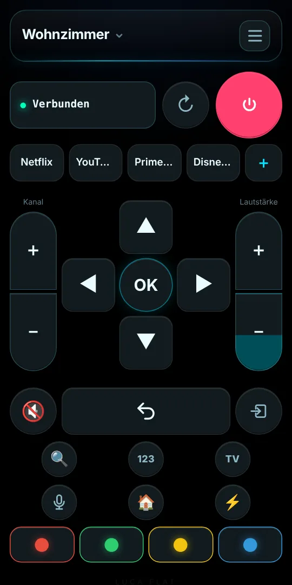
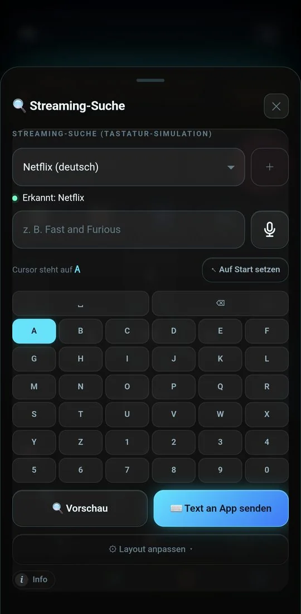
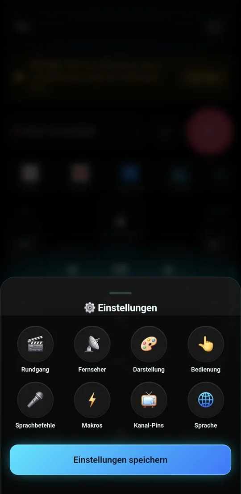
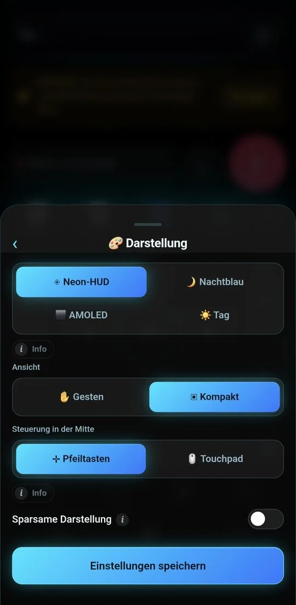
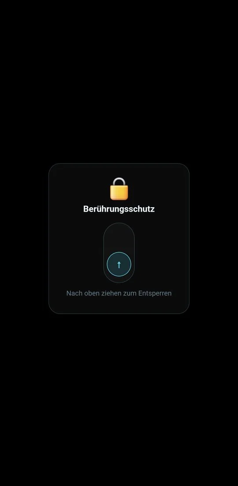

Dein Handy als Fernbedienung für den Fernseher.
Die Universalfernbedienung macht dein Handy zur Fernbedienung. Sie verbindet sich über dein WLAN direkt mit dem Fernseher, ohne Umweg über einen Server. Sie funktioniert mit Sony Bravia sowie mit Android TV und Google TV.
Bald im Play Store

Funktionen
- Zwei Bedienarten, Gesten mit großer Wischfläche oder kompakt mit allen Tasten, dazu wahlweise Pfeiltasten oder Touchpad
- Vier Designs – Original, Rechenwerk, Stellwerk und Programmheft – jeweils mit eigenen Farbschemen
- Sony Bravia und Android TV: Fernseher im Netzwerk finden und einrichten
- Sender, Apps und Makros: mehrere Schritte mit einem Tipp
- Sprachbefehle per Tipp auf das Mikrofon, auch mit eigenen Sätzen
- Streaming-Suche: Titel eingeben und direkt an die Streaming-App senden
- Fernbedienung im Benachrichtigungsfeld (optional): Ein/Aus, Lautstärke, Sender, Steuerkreuz und OK, auch bei geschlossener App
- Drei Widgets für den Startbildschirm: Mini (Ein/Aus, Lautstärke, Stumm), Fernbedienung (mit Sendern, Zurück, Home und Eingang) und Steuerkreuz
- Berührungsschutz gegen versehentliche Eingaben
- Fehlerprotokoll: Wenn eine Taste nicht funktioniert, zeigt die App Code und Lösungshinweis
- Mehrere Fernseher speichern und mit einem Tipp auf den Namen oben links wechseln
- In der Ansicht „Kompakt“: Neustart des Fernsehers, zur Sicherheit erst nach zweimaligem Antippen (bei Android TV hält die App dafür Ein/Aus fünf Sekunden gedrückt)
- Alle Eingänge auf einen Blick (bei Android TV einmal anlernbar), dazu Zahlentasten und Kanal-Pins als Schnellwahl
- Bei Sony Bravia zusätzlich: genaue Lautstärke, Anzeige des laufenden Programms, Bildmodus und Senderliste vom Fernseher
- 10 Sprachen, darunter Deutsch, Englisch, Französisch und Spanisch
Screenshots




Widgets für den Startbildschirm
Kompatibilität
Funktioniert mit Sony-Bravia-Fernsehern (IP-Steuerung mit PSK) sowie mit Fernsehern und Zuspielern mit Android TV oder Google TV (Kopplung per Code). Handy und Fernseher müssen sich im selben WLAN befinden. Bei Sony Bravia stehen einige Funktionen mehr bereit, etwa genaue Lautstärke, Bildmodus und ein echter Neustart. Bei Android TV hängen Eingänge und Neustart vom Hersteller ab.
Sony und Bravia sind Marken der Sony Group Corporation, Android TV und Google TV Marken von Google LLC. Diese App ist ein unabhängiges Projekt und steht in keiner Verbindung zu diesen Unternehmen.
Download
Der Link zum Play Store erscheint hier, sobald die App veröffentlicht ist.
Keine Werbung und kein Tracking. Details stehen in der Datenschutzerklärung der App.
Probleme oder Fragen? Die Hilfe zur App erklärt Verbindung, Widgets und Fehlerprotokoll.